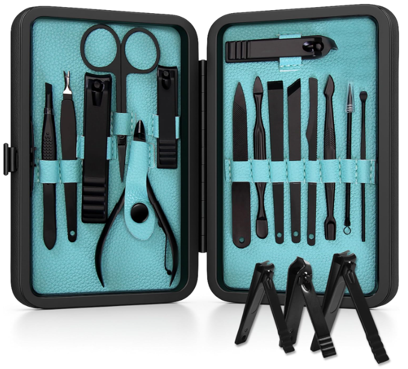
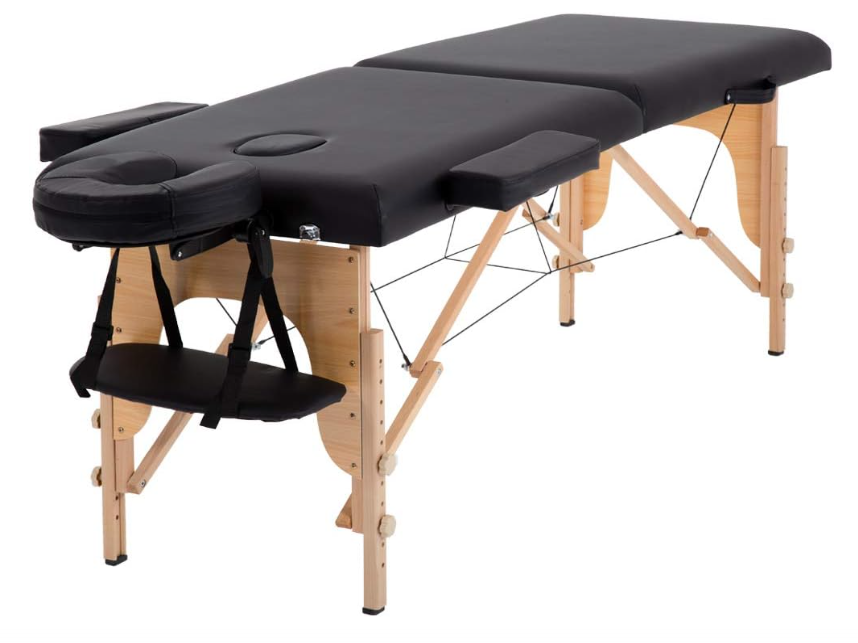
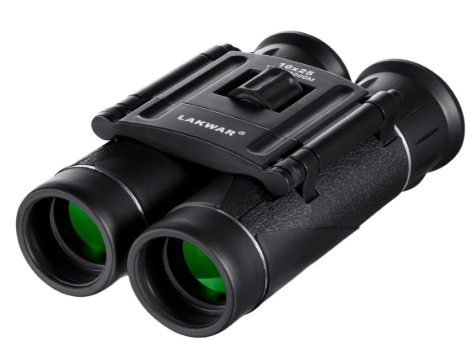
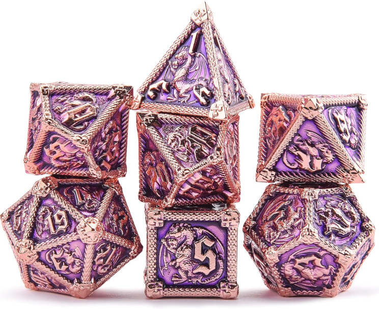
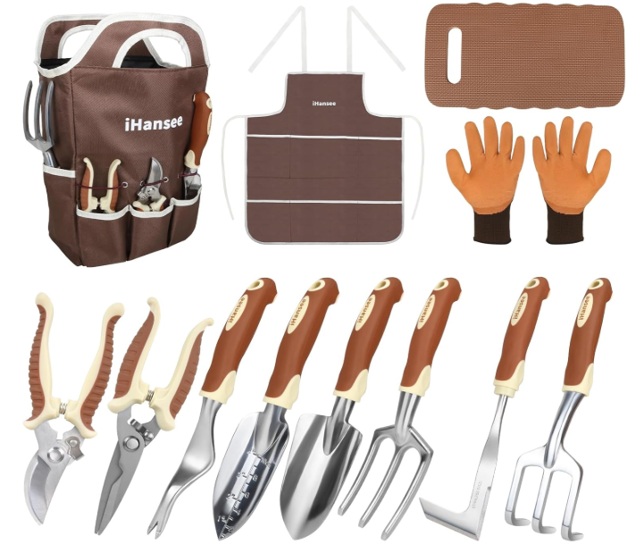
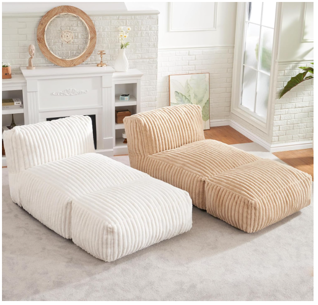
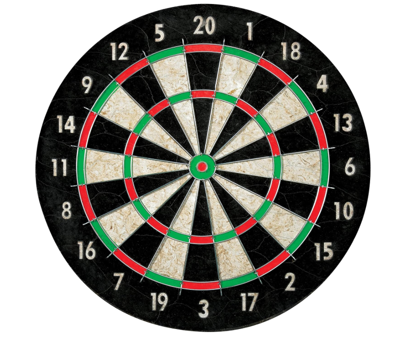

This is a great example of Andrea's favorite thing — new experiences with me. A date idea book keeps us exploring, laughing, and making memories together, which is what she treasures most.
This is a great example of how aromatherapy can transform an ordinary evening into something soothing and restorative. Imagine lavender filling the air like a soft, calming hug, citrus notes of orange and lemon brightening the room like morning sunshine, and a hint of eucalyptus rolling in as refreshing as a cool breeze after the rain. With the right blend of scents, Andrea can turn self-care time into a little sanctuary at home.
This is a great example of how Andrea can bring the spa home with her. A spa kit turns the bathroom into a retreat — a warm bubble bath that sparkles like champagne, silky lotions that melt into the skin like liquid sunshine, and soothing face masks that feel as refreshing as morning dew. With candles flickering and soft music playing, it's a little pocket of peace where she can unwind and be pampered anytime she wants.

This is a great example of solving one of Andrea's everyday mysteries — how she can literally never find a pair of tweezers or nail clippers when she needs them. A fresh set means no more digging through drawers or borrowing mine; just a simple, reliable fix that makes her self-care routine smoother and way less frustrating.

This is a great example of how much Andrea loves her massages — she asks for them all the time! A massage table means she can finally have her very own spa setup at home, complete with her own personal servant (me) ready to give a de-stressing massage on beck and call. It's comfort, relaxation, and a little luxury all rolled into one.

This is a great example of supporting Andrea's latest hobby — birding. She's been talking about getting a nice pair of binoculars (to say the least), and with them she can spot every flutter and feather in crystal clarity. She loves the thrill of finding new birds, identifying them, and adding each one to her growing list of discoveries. A gift like this helps her turn simple walks into little adventures full of wonder.

This is a great example of how Andrea's eyes light up with pure joy whenever she sees a new set of Dungeons & Dragons dice. The sparkle of the colors, the weight in her hand, and the little stories behind each roll make the game even more magical for her. A fresh set of dice isn't just a gift — it's another way to see that unmistakable excitement in her smile

This is a great example of Andrea's love for gardening and flowers. There's nothing she enjoys more than tending to her plants and watching new blooms appear. Having a good set of tools makes all the difference — turning the hard work into something smooth and enjoyable, and letting her spend more time surrounded by the colors and scents she loves most.

This is a great example of Andrea's perfect rainy day — curled up in extreme comfort with a good book for hours. A reading lounge chair gives her that cozy spot she loves, where the sound of rain outside, a warm blanket, and the pages of her favorite story all come together to make the day feel magica

This is a great example of Andrea's love for games she can share with her dad. She's spent hours playing darts with him, laughing and competing, and it's something that always brings her joy. Gifts like this remind her of those special moments and keep that shared love of games alive.

This is a great example of Andrea's hopes and dreams for the future — becoming a mom. While we're not pregnant yet, we have high hopes for baby Cormier in the months to come. Gifts like this are little reminders of the love, excitement, and anticipation we already feel as we look forward to starting our family together.